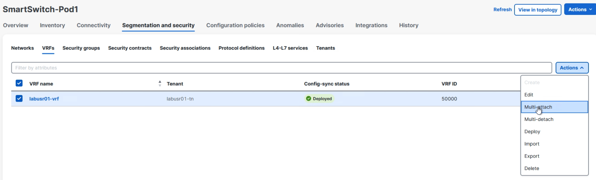
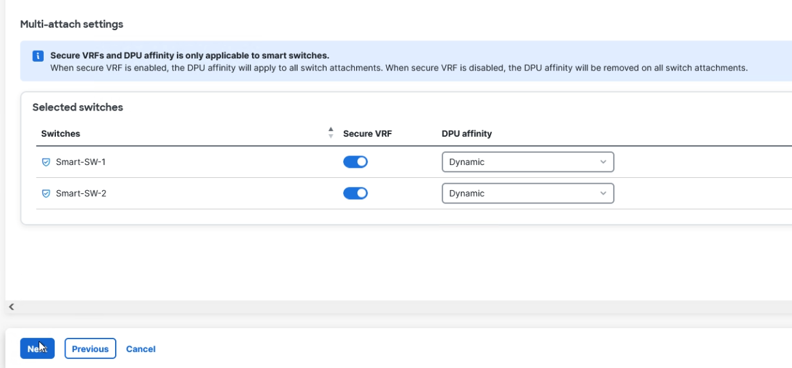
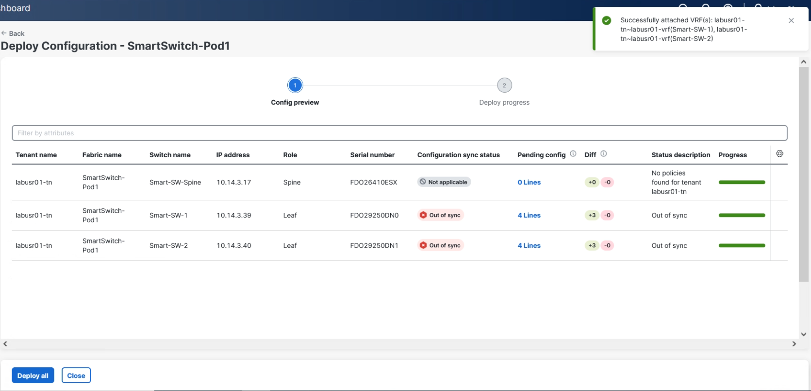
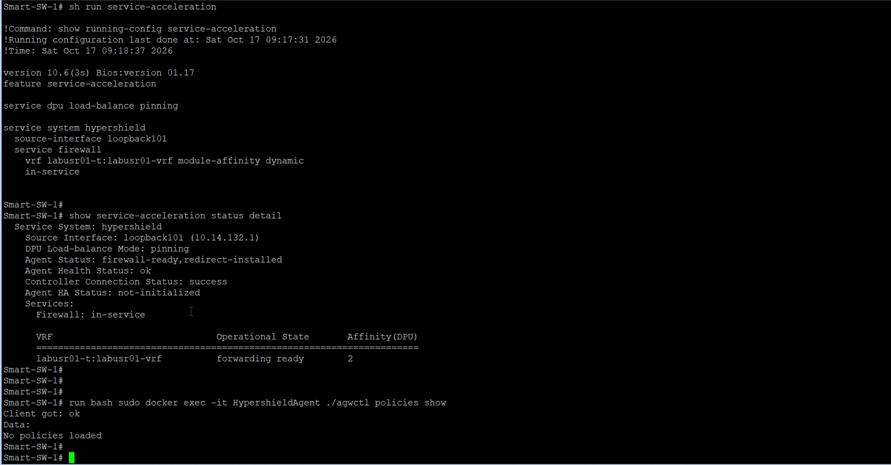
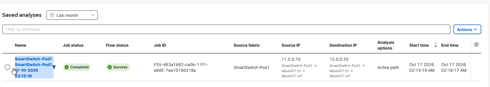
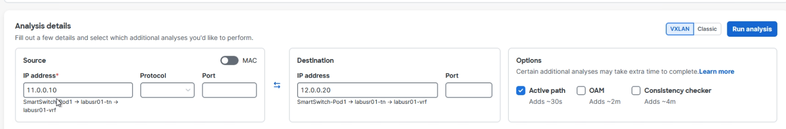
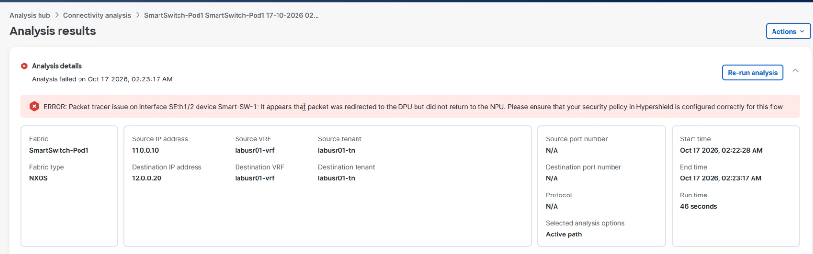
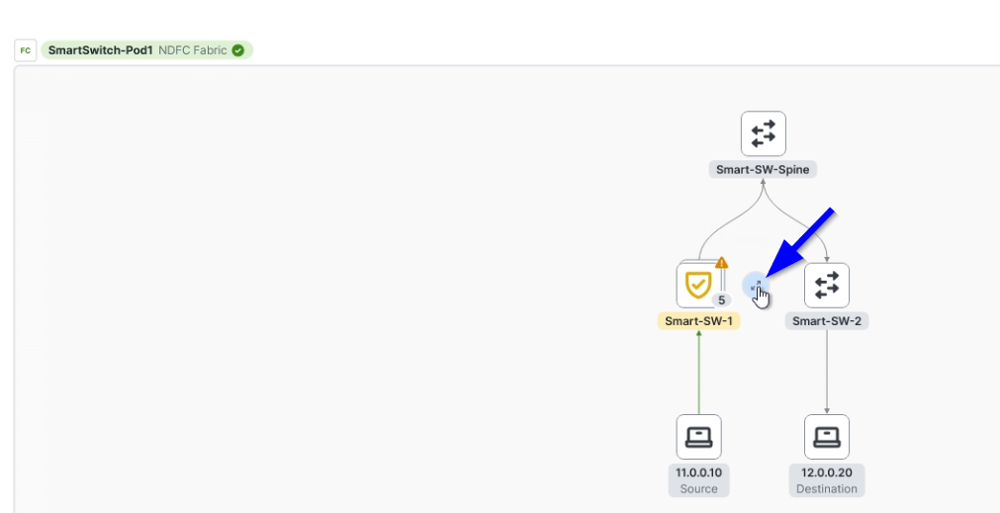
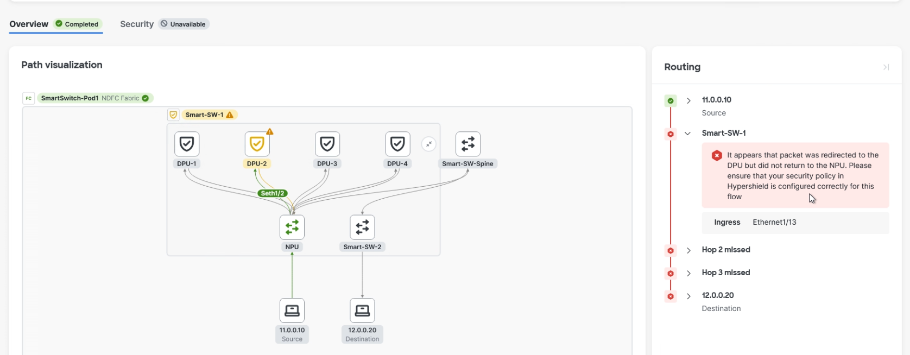

Task 5: Enable Secure VRF
Task 5: Enable Secure VRF
Objective
Enable Secure VRF on both switches and verify Hypershield agent and forwarding readiness.
Enable Secure VRF
-
Log in Nexus Dashboard with the Pod specific credential (labusr01/Dmzpassword01), open Manage > Fabrics > SmartSwitch-Pod1 > Segmentation and security > VRFs.
-
Select labusr01-vrf, then choose Actions (white) > Multi-attach and select both Smart Switches and click Next.

Figure. Secure VRF and Dynamic DPU Affinity settings.
- Enable Secure VRF and set DPU Affinity to Dynamic.

Figure. Secure VRF save and deploy wizard.
- Select Next, then Save & deploy.

Figure. Pending Secure VRF configuration.
-
Log in to Smart-SW-1 and Smart-SW-2 via MTPuTTY and run both commands:
#show running-config service-acceleration #show service-acceleration status detailCome back to the Nexus Dashboard, review the pending configuration, and select Deploy all. When deployment completes, select Close.
Verify switch readiness
Confirm that the output reports Agent Health Status: ok, a successful controller connection, firewall in-service, and VRF operational state forwarding ready. The recording showed Dynamic affinity and DPU 2 for labusr01-t:labusr01-vrf.

Figure. Hypershield agent and service acceleration report ready.
Expected traffic before policy deployment
When VRF traffic is redirected to the DPU and no explicit security policies exist from Hypershield, then the default behavior is to block traffic. This means the application will break because no permit policy allows the traffic through the DPU. This default deny enforcement ensures that without explicit permission, no communication is allowed, which is a Security best practice.
ICMP check: from EP-vlan11, run the ping command below and record the actual response. Ping will drop
vm:~$ ping 12.0.0.20
PING 12.0.0.20 (12.0.0.20): 56 data bytes
TCP/8080 check: start the server on EP-vlan12, then the client on EP-vlan11. Before the allow policy exists, record whether the connection is blocked.
On EP-vlan12, start the server:
vm:~$ iperf3 -s -p 8080
On EP-vlan11, start the client:
vm:~$ iperf3 -c 12.0.0.20 -p 8080 -t 10 -b 1G
Run connectivity analysis
- In Nexus Dashboard. Select your pre-created analysis and click on Run analysis

Figure: Select any existing Connectivity Analysis and rerun it.

Figure: Alternatively, create a new analysis with known source and destination IP addresses.

Figure. Connectivity Analysis failed as the traffic is via DPU (implicit deny).

Figure. Click on the switch and expand it to view the Path visualization.
- In the analysis details, click on expand icon on the switch to see how DPU is handling the packet.

Figure. Expanded switch view in Connectivity Analysis.